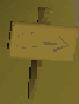
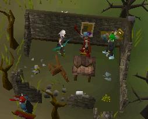
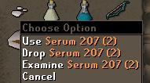
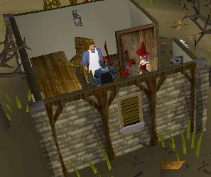
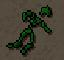
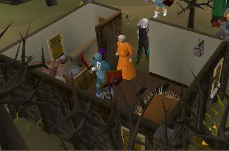
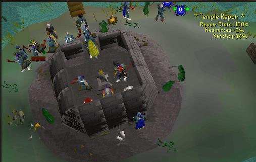
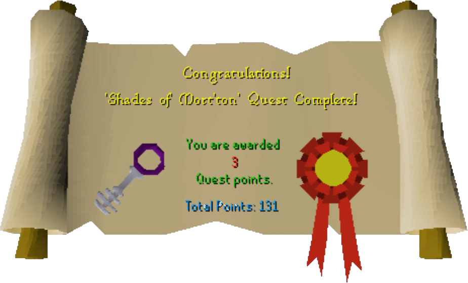

Shades of Mort'ton
Description: Mort Myre's south border has been breached, and a path towards a strange town called 'Mort'ton' has been found.Strangers return from such visits with tales of the 'Afflicted' and shadowy creatures who jealously guard their tomb treasure.
Difficulty: Medium
Length: Short
Items & Skills Needed:
- 15 Herblore
- 20 Crafting (Higher crafting is a bonus)
Recommended:
Reward: 3 quest points, 2,000 Herblore XP, and the ability to go down into temple north of the General Shop.
Taking the Diary to the Apothecary in Varrock earns one-time additional herblore xp. Some people also get Crafting XP.
Instructions:
Once you have passed the Nature Spirit Quest island, continue heading south down and round the winding path.
When you first come into Mort'ton search the sign at the entrance, you will notice it has teeth marks on the sign.

Search this table and the shelf. You will then get three Herbs and a Diary. Click the Herbs to ID them, you will get two Tarromin and one Rogues purse (Rogues purse is a Herb used in Jungle Potion Quest).

It also explains that Tarromin is used in a "temporary cure" that makes the Afflicted townspeople intelligible for a short period.





TIP: make sure there are several people repairing the temple and several attacking the shades, as shades CAN and WILL attack the temple and tear it down completely. Players defending the temple also accrue Sanctity.
Head to any one of these, it's not important which one. Use the Pyre logs on the altar, then use the remains on the altar, light these using your Tinderbox and a key will appear. Take the key (this is used for the doors north of the shop but isn't needed in the quest.)
Congratulations, Quest Complete!

Note: For the permanent cure, you need 20% sanctity and then you must use serum 207 on the sacred flame then give it to the people as serum 207(p). It is recommended to use this on Razmire so that you have ready access to his Stores in the future.
Another tip: if the world you are on does not have enough people to build the temple, switch to World 2 (most populated member world). But buy your Olive oil before switching, as it is harder to purchase where many people are trying to buy it.
The key generated when setting the shade to rest allows you to access the Mort'ton tombs (entrance located north of the store). Here you can kill higher level shades (Phrin, Riyl, Asyn, Fiyr) and use your keys to open chests and get loot such as armour, weapons, runes, and Fine cloth (which, along with Hollow bark and cash, can be made into Splitbark armour by the Wizard at the Wizard Tower). See the Mort'ton Shade Burning Special Report for complete details.
NOTE: Keys aren't generated 100% of the time when setting shades to rest so if you didn't get one during the quest, you can keep trying until you do.
This quest guide was written by corbear007,jalech99, darksole17, and leaderofdarkness. Thanks to Weezy, DRAVAN, andro_girl, Demonichell, havoc_cat, mastersiosk, and pokemama for corrections.
This quest guide was entered into the RuneHQ.com database on Mon, Oct 18, 2004, at 12:05:32 PM by Weezy and was last updated on Sun, Nov 13, 2005, at 09:02:06 PM by DRAVAN.